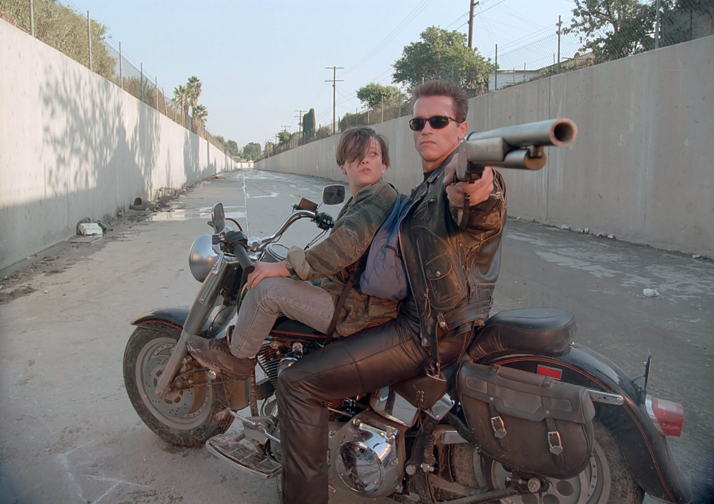
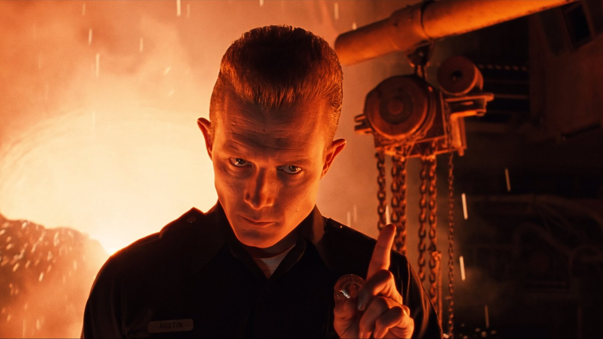

Celui-là, je me souviens exactement où je l'ai trouvé.
J'avais neuf ans. On était au Carrefour avec ma mère, au rayon des cassettes vidéo, et elle a accepté de prendre la K7 de Terminator 2. J'avais des étoiles plein les yeux.
À l'école, les copains ne parlaient que de ça. Moi, je n'avais encore rien vu. Et là, je tenais enfin la cassette entre mes mains.
James Cameron, je le connaissais déjà. Mon père m'avait fait découvrir Abyss, et à la maison, il y avait la cassette d'Aliens, le retour. Quant à Arnold Schwarzenegger, je l'adorais depuis Un flic à la maternelle, découvert l'année précédente, à huit ans.
Et comme pour toutes les suites de cette saison, je n'avais pas vu le premier. Je ne le découvrirais que quelques années plus tard.
Il y a une image qui ne m'a jamais quitté. Dès les premières minutes, un crâne de métal, au milieu des flammes, qui nous fixe de ses yeux rouges.
À neuf ans, je venais de comprendre que le cinéma pouvait faire peur et émerveiller en même temps.
Ce soir, on ressort la cassette du Carrefour.

Terminator 2 : Le Jugement Dernier — affiche, 1991
Terminator 2 : Le Jugement Dernier.
1991. Réalisé par James Cameron. Avec Arnold Schwarzenegger, Linda Hamilton, Edward Furlong et Robert Patrick.
En 1984, Terminator est un petit film de science-fiction au budget modeste, devenu culte presque par accident. Un cyborg venu du futur, au visage impassible, traque sans relâche une jeune serveuse, Sarah Connor, dont le fils doit un jour sauver l'humanité.
Sept ans plus tard, James Cameron revient avec des moyens colossaux et une idée qui renverse tout : le Terminator, le tueur implacable du premier film, devient cette fois le protecteur. Face à lui, une nouvelle machine, le T-1000, faite de métal liquide, capable de prendre n'importe quelle forme.
Sarah Connor n'est plus la jeune femme apeurée du premier film. Enfermée en hôpital psychiatrique, elle est devenue une combattante endurcie. Et le futur sauveur de l'humanité, John, n'est encore qu'un adolescent rebelle de dix ans.
Pour clore cette saison spéciale, voici le cas le plus rare de tous : la suite que beaucoup considèrent comme supérieure à l'original. La question prend alors tout son sens : jusqu'où une suite peut-elle tout changer, au point de retourner son propre monstre en héros ?
À la fin des années 80, James Cameron est devenu l'un des réalisateurs les plus respectés d'Hollywood. Après Terminator en 1984, il a signé Aliens, le retour en 1986, puis Abyss en 1989. Trois films, trois défis techniques, et la réputation d'un cinéaste capable de repousser les limites de ce qu'on peut montrer à l'écran.
Une suite de Terminator est envisagée depuis longtemps, mais les droits sont éparpillés entre plusieurs sociétés. C'est Carolco, le studio indépendant de Mario Kassar et Andrew Vajna, déjà derrière Rambo III, qui finit par tout racheter. Carolco ne fait rien à moitié : le budget dépasse les cent millions de dollars, ce qui fait de Terminator 2 le film le plus cher jamais produit à l'époque.
Cameron écrit le scénario avec William Wisher. Leur idée centrale renverse tout le premier film : le Terminator, joué par Arnold Schwarzenegger, revient, mais cette fois pour protéger John Connor. Schwarzenegger, devenu entre-temps la plus grande star d'action du monde, accepte avec enthousiasme.
Linda Hamilton reprend le rôle de Sarah Connor et se prépare pendant des mois avec un entraînement physique intensif pour transformer complètement son personnage. Sa sœur jumelle, Leslie, lui sert même de doublure dans certaines scènes. Pour jouer John Connor, la directrice de casting Mallie Finn repère Edward Furlong, un adolescent sans aucune expérience du cinéma. Et pour le T-1000, Cameron choisit Robert Patrick, un acteur au physique sec et au regard glacial, à l'opposé de la carrure de Schwarzenegger.
Le vrai défi est technique. Le T-1000, fait de métal liquide, doit se déformer, se reconstituer, traverser les barreaux d'une porte. Cameron fait appel à Industrial Light & Magic, qui avait déjà créé pour Abyss une créature faite d'eau. Les images de synthèse de T2 sont une révolution : pour la première fois, un personnage numérique devient un acteur à part entière du film. Stan Winston, de son côté, fabrique les effets physiques : l'endosquelette, les blessures et les maquettes.
Le tournage se déroule en Californie, avec des cascades à grande échelle, comme la célèbre poursuite dans les canaux de Los Angeles, avec un camion qui plonge depuis un pont.
Terminator 2 sort aux États-Unis le 3 juillet 1991, et à l'automne en France. Hollywood n'a encore jamais rien vu de tel.

John Connor et le Terminator, dans les canaux de Los Angeles
Los Angeles, 2029. Le monde n'est plus qu'un champ de ruines. Les machines ont pris le pouvoir, et les derniers humains résistent, menés par un homme : John Connor.
Pour l'éliminer avant même qu'il ne devienne une menace, les machines envoient un tueur dans le passé, en 1995. Sa cible : John Connor enfant.
Mais la résistance a fait la même chose. Elle aussi a envoyé quelqu'un dans le passé, pour protéger le garçon.
En 1995, John a dix ans. Il vit en famille d'accueil, multiplie les bêtises et ne croit pas un mot de ce que raconte sa mère. Sarah Connor, elle, est enfermée dans un hôpital psychiatrique. Elle répète à qui veut l'entendre qu'une guerre nucléaire va bientôt détruire l'humanité, et personne ne la croit.
Deux silhouettes apparaissent alors à Los Angeles, dans des éclairs de lumière. La première est massive, impassible, vêtue de cuir. La seconde a l'apparence d'un policier ordinaire, mais elle est faite d'un métal capable de prendre n'importe quelle forme.
Les deux machines cherchent John. L'une pour le tuer, l'autre pour le sauver.
Commence alors une course-poursuite sans répit : libérer Sarah, échapper à une menace presque indestructible, et tenter l'impossible, empêcher le jour où tout doit basculer.
Un enfant, une mère, une machine, et une question qui traverse tout le film : l'avenir est-il déjà écrit ?
Terminator 2 est la réponse la plus éclatante à la question posée tout au long de cette saison spéciale. Qu'est-ce qu'une suite a le droit de changer ? Ici, la réponse est : presque tout.
Die Hard 2 changeait de décor. Rambo III changeait d'échelle. Superman III changeait de genre. L'Arme Fatale 3 ne changeait presque rien. Le Flic de Beverly Hills 3 changeait son héros. Terminator 2, lui, retourne entièrement son propre mythe : le monstre du premier film devient le protecteur.
Et ça fonctionne parce que James Cameron ne trahit rien. Il prend ce qui faisait peur en 1984 et le transforme en quelque chose de touchant. Le Terminator reste une machine froide, implacable, sans émotion. Mais au contact de John, il apprend : à ne plus tuer, à comprendre les humains, à faire un sourire maladroit. La relation entre l'enfant et la machine devient le cœur du film, presque une histoire de père et de fils.
Sarah Connor, elle, a subi la transformation inverse. La serveuse apeurée du premier film est devenue une guerrière endurcie, rongée par ce qu'elle sait. Linda Hamilton livre une performance physique et intense, l'une des grandes figures féminines du cinéma d'action. Elle est le véritable personnage tragique du film : une mère prête à tout pour sauver son fils, au point de perdre une partie de son humanité.
Face à eux, le T-1000 de Robert Patrick est un adversaire parfait. Il ne court pas, il avance. Il ne crie pas, il observe. Et grâce aux effets numériques d'ILM, il traverse les barreaux, se reforme, se fond dans le sol. Pour la première fois, un personnage en images de synthèse fait réellement peur.
L'action, elle, est d'une ampleur jamais vue : la poursuite dans les canaux, l'attaque de l'hôpital, la fusillade dans un immeuble, la séquence finale dans une aciérie. Tout est lisible, tendu, rythmé par la musique métallique de Brad Fiedel. Cameron mélange effets numériques et effets physiques avec une maîtrise totale, et le résultat n'a presque pas vieilli.
Il y a enfin le fond. Derrière l'action, Terminator 2 parle de l'avenir qu'on peut encore changer. Le premier film disait que le destin était écrit. Le second affirme qu'il ne l'est pas. C'est une suite qui change jusqu'au message de l'original, et qui le rend plus fort.
Terminator 2 prouve qu'une suite peut tout changer, à une seule condition : savoir exactement ce qu'elle garde. Ici, c'est la peur, la course contre le temps, et le lien entre une mère et son fils.

Le T-1000 (Robert Patrick), au cœur de l'aciérie
Terminator 2 n'a jamais été déclassé. C'est même tout le contraire : il est l'une des rares suites de l'histoire du cinéma à avoir dépassé l'original dans le cœur du public.
Le succès a été immédiat. Plus de cinq cents millions de dollars de recettes dans le monde, et le plus gros succès de l'année 1991. Le film le plus cher jamais tourné est devenu l'un des plus rentables.
La reconnaissance a suivi. Terminator 2 remporte quatre Oscars, dont celui des meilleurs effets visuels. Le T-1000 change l'histoire des effets spéciaux : deux ans plus tard, Steven Spielberg s'appuiera sur ces avancées pour faire vivre les dinosaures de Jurassic Park. Le cinéma numérique moderne commence en grande partie ici.
Pourquoi a-t-il dépassé le premier ? Parce que Terminator était un petit film de genre, sombre et nerveux, tourné avec peu de moyens. Terminator 2 garde cette noirceur, mais y ajoute ce qui manquait : l'émotion, l'ampleur, et des personnages qui évoluent. Pour toute une génération, à commencer par celle qui l'a découvert en premier, T2 est devenu la référence, et le premier film son prologue.
La suite de la saga n'a fait que renforcer ce statut. Terminator 3, Renaissance, Genisys, Dark Fate : aucun des films suivants n'a retrouvé la magie de 1991. Dark Fate, en 2019, s'est même présenté comme la suite directe de T2, en ignorant les épisodes intermédiaires. Comme si la saga elle-même reconnaissait que tout s'était joué là.
Pourtant, cette réussite pose une question à toute cette saison spéciale. Pourquoi Terminator 2 a-t-il été célébré, alors que Rambo III, Superman III ou Le Flic de Beverly Hills 3 ont été déclassés ? Ils ont tous pris des risques, tous changé quelque chose. La différence tient peut-être en une seule idée : T2 a changé tout ce qui pouvait l'être, sans jamais perdre ce qui faisait l'âme du premier.
Le film qui a réussi là où tant d'autres ont trébuché.
Parce qu'on croit le connaître par cœur, et qu'on oublie à quel point il reste impressionnant.
Terminator 2 est partout : ses répliques, ses images, sa musique sont entrées dans la culture populaire. Mais le revoir en entier, aujourd'hui, c'est mesurer à quel point il tient encore debout. Plus de trente ans après, peu de films d'action peuvent rivaliser avec sa précision, son rythme et sa clarté.
Parce que ses effets n'ont presque pas vieilli. Le T-1000 en métal liquide reste saisissant, et c'est surtout parce que Cameron ne l'utilise qu'avec parcimonie. Le reste est fait de maquettes, de cascades, d'explosions et de décors réels. Ce mélange entre artisanat et technologie naissante fait toute sa force, et il nous rappelle ce qu'on a perdu quand le numérique a pris toute la place.
Parce que, revu adulte, le film raconte autre chose. Enfant, on y voit un robot invincible et une poursuite sans fin. Adulte, on y découvre une mère épuisée, un garçon qui cherche un père, et une machine qui apprend ce que signifie être humain. Le film d'action se double d'un film sur la transmission, et sur la possibilité de changer son destin.
Parce qu'Arnold Schwarzenegger n'a jamais été aussi juste. Il joue une machine, mais il lui donne une présence, une maladresse et une forme de tendresse qu'on n'attendait pas.
Et parce que Terminator 2 boucle cette saison spéciale. Six suites, six façons de répondre à la même question. Certaines ont changé le décor, d'autres le ton, d'autres le héros. Celle-ci a tout changé, sans jamais perdre l'essentiel.
Pour moi, c'est aussi la cassette qui a fait de la salle de séjour un cinéma. Une K7 achetée au Carrefour avec ma mère, des étoiles plein les yeux, et ce crâne de métal qui me regardait à travers les flammes. Le revoir, c'est retrouver cette émotion intacte.
Terminator 2 n'est pas Terminator. Il ne cherche pas à l'être.
C'est une suite qui a tout osé. Elle a retourné son monstre en protecteur, transformé sa victime en guerrière et changé jusqu'au message de l'original. Et au lieu de le trahir, elle l'a dépassé.
Personne ne vous dira que c'est le moins bon de la saga. Pour beaucoup, c'est le meilleur.
Mais moi, je ne l'ai pas découvert comme une suite. Je l'ai découvert à neuf ans, sur une cassette achetée au Carrefour avec ma mère. Je n'avais jamais vu le premier. Je ne le verrais que quelques années plus tard.
Et c'est là que cette saison spéciale prend tout son sens.
Six films, six suites, et à chaque fois, je suis entré par la porte du fond. Die Hard 2 avec mon grand-père. Rambo III, enregistré par mes parents. Superman III, enregistré par mon père. L'Arme Fatale 3, la cassette que mon grand-père m'a tendue. Le Flic de Beverly Hills 3, découvert chez lui. Et Terminator 2, acheté avec ma mère.
Pendant toute cette saison, on s'est demandé ce qu'une suite avait le droit de changer. Mais pour l'enfant devant le lecteur, la question ne se posait pas. Il n'y avait pas d'original à trahir, pas de comparaison, pas de hiérarchie. Il n'y avait qu'une histoire qui commençait.
C'est peut-être ça, la vraie réponse. Une suite n'est une suite que pour ceux qui ont vu le premier. Pour tous les autres, c'est le début de l'aventure.
Et ce crâne de métal, au milieu des flammes, qui me fixait de ses yeux rouges, c'était le début de la mienne.
La cassette est dans le lecteur. On rembobine.
Titre original
Terminator 2: Judgment Day
Pays
États-Unis
Genre
Science-fiction / Action
Durée
137 min
Producteur
Carolco Pictures
Avec aussi
Edward Furlong · Robert Patrick · Joe Morton
Scénario
James Cameron · William Wisher
Fil conducteur
Saison Spéciale — La suite qui a dépassé l’original
SOMEDAY — SPÉCIAL EP. 06